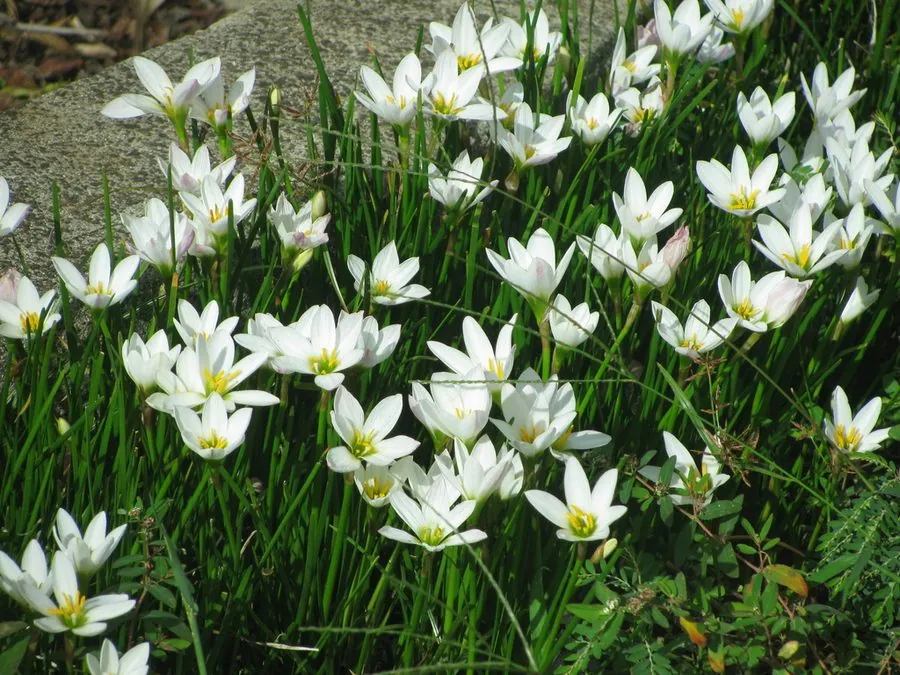

花卉与草本 · 植物界
葱兰 Zephyranthes candida

石蒜科多年生球根草本，叶片细长如葱，雨后开出白色小花，是南方常见的花坛镶边与地被植物，原产南美。
- 分类
- 门被子植物门纲木兰纲目天门冬目科石蒜科属葱莲属
- 栖息环境
- 南美草原与河岸，喜温暖、阳光充足、耐半阴
- 地理分布
- 原产南美洲，中国南方广泛栽培，长江流域可露地越冬
- 保护级别
- 暂无评估
物种志
葱兰为石蒜科葱莲属多年生球根草本，株高 15–30 厘米，地下具卵形小鳞茎。叶片线形，肉质，深绿色，丛生，形似小葱。花单生花葶顶端，花被片 6 枚，白色，外侧常带淡红晕，花径 3–5 厘米，花期 7–10 月；果实为蒴果。
葱兰原产南美洲阿根廷、乌拉圭一带，喜温暖、阳光充足和湿润的环境，耐半阴，在南方可露地越冬。它常在雨后集中开放，因此英文名意为“雨百合”；花白色、叶片葱绿，成片种植时如同铺了一层白色小花毯，是花坛镶边、林下地被和路边绿化的常用材料。葱兰以分球繁殖为主，鳞茎繁殖快，栽培管理粗放，但忌长期积水，否则鳞茎容易腐烂。
形态与习性
- 株高15–30 厘米，叶线形丛生
- 花期7–10 月，雨后集中开放
- 果期花后结蒴果
- 光照喜充足阳光，也耐半阴
- 水分喜湿润，忌积水
- 土壤疏松肥沃、排水良好的壤土
- 繁殖以分球繁殖为主
- 主要用途花坛镶边、林下地被、盆栽
趣味知识
- 葱兰叶片细长如葱，因此得名；它常在雨后集中开放，英文名意为“雨百合”。
- 葱兰的花白色、花被片 6 枚，成片开放时像铺了一层白花毯。
- 它靠小鳞茎分球繁殖，繁殖速度快，栽培管理粗放。
- 葱兰在南方可露地越冬，是花坛镶边和林下地被的常用植物。